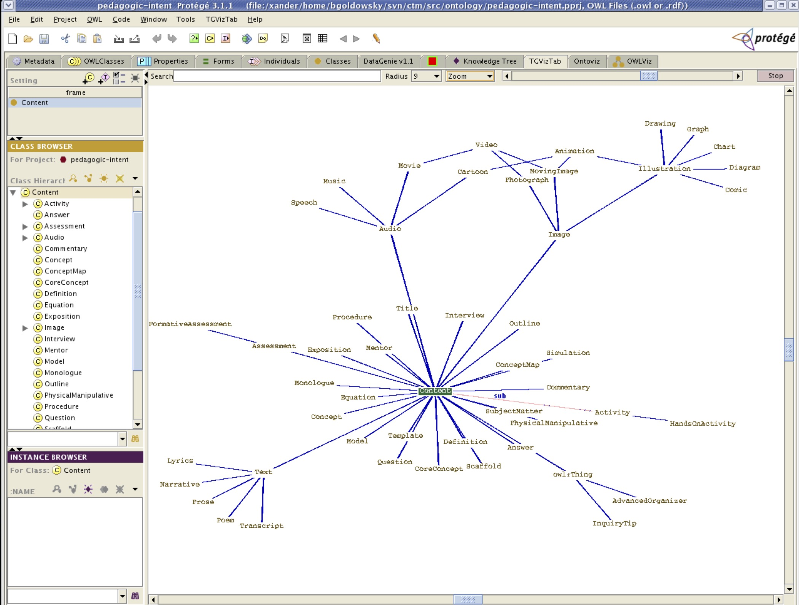

The CLIPPS pedagogic intent ontology formalizes concepts of pedagogic intent and semantic relationships across digital educational content elements. This ontology supports a user model-based semantic analysis approach for the selection, sequencing, and presentation of educational content appropriately annotated by content developers.
Development and formalization of the pedagogic intent ontology was greatly facilitated through use of the Protégé tool. While direct definition of the ontology in OWL would have been possible, Protégé allowed us to share the ontology as it was developing with various members of the research team to obtain feedback. The figure below shows a screenshot of Protégé with a portion of the pedagogic intent ontology loaded.

The ontology specifies the content annotation process. The pedagogic intent ontology specifies two main categories of annotations: standalone and context-sensitive.
Standalone attributes describe the aspects of the content chunk that are constant regardless of the context within which the content is considered, while context-sensitive attributes describe the relationships between this chunk and another related content chunk. Within the standalone attributes, there are two types of attributes: class and metadata. The class attribute is specific and absolute, and describes the nature of the content chunk, such as animation, definition, equation, concept map. The metadata attributes provide additional details about the chunk and consist of semantic density, interactivity type, interactivity level, cognitive challenge, and linguistic challenge. Note that these first three attributes come from the Learning Object Metadata scheme (IEEE 1484.12-1-2002 Specification).
Context-specific attributes describe the pedagogic intent of the chunk and can be thought of as the verbs in subject-verb-object statements. The intent of these attributes are to answer the question of why, in this context, did the author or curriculum designer include this content chunk. This will always be in relation to a second content chunk. In the abstract this could be expressed:
Content Chunk 1 has Some Pedagogic Purpose In Relation To Content Chunk 2
as in:
Content Chunk 1 providesIntroductionFor Content Chunk 2
These verbs are of a form that allows for an inverse: e.g., providesBackgroundInformationFor/hasBackgroundInformation. Pedagogic intent verbs are arranged into a hierarchical structure, and fall into four categories: the three UDL networks (recognition, strategic, and affect), as well as a fourth category, structural.
The ontology had been made available on the CLIPPS project web site hosted by CAST to permit extension by others. In particular, we believed that this ontology can be used to extend the existing educational content markup schemes to go beyond considerations of structure and include considerations of pedagogy.
This link takes you to the Pedagogic Intent Ontology itself, as rendered in HTML by Protégé)